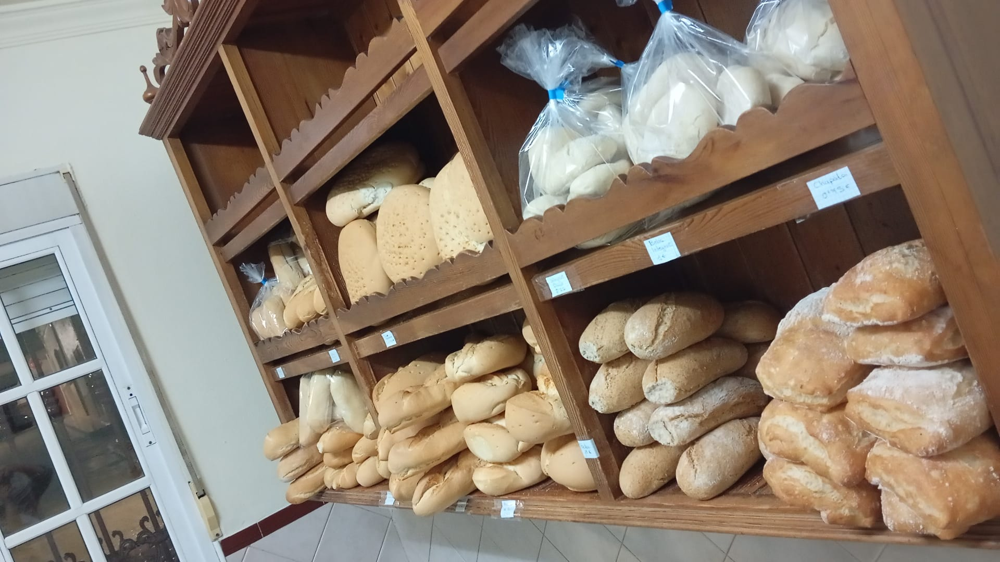
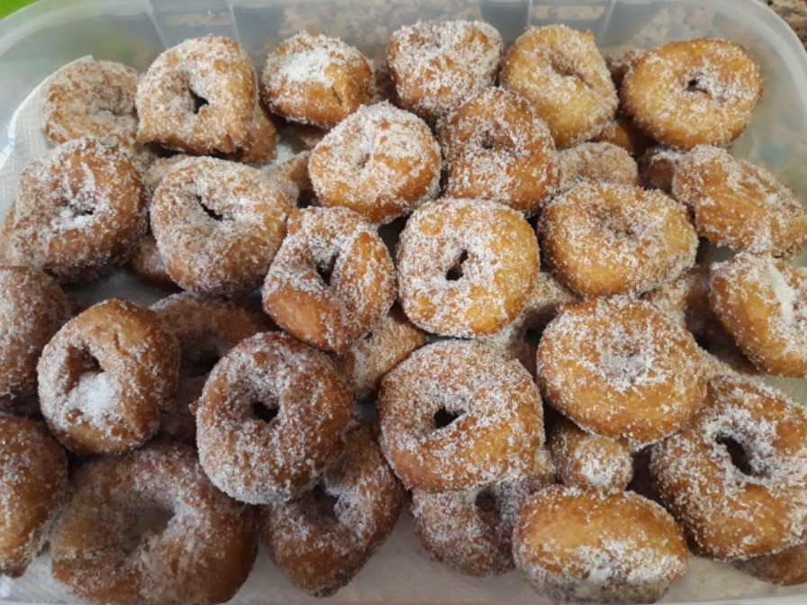
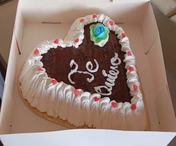

Pan fresco diario y dulces tradicionales elaborados de forma artesanal.
Encargar ahoraSomos una panadería artesanal en Almargen (Málaga) especializada en pan tradicional, dulces típicos andaluces y tartas por encargo. Trabajamos cada día con ingredientes seleccionados y recetas tradicionales para ofrecer el mejor sabor y frescura.

Panes integrales, barras de viena, panes redondos, pulguitas o molletes entre nuestra variedad de panes, elaborados a diario.

Roscos caseros, magdalenas, pestiños, tortas de aceite y dulces típicos andaluces elaborados artesanalmente.

Tartas para cumpleaños, celebraciones y eventos especiales. Encargos personalizados bajo pedido.
Lunes a Sábado: 7:00 – 14:00 / 16:00 – 20:00
Domingos: Cerrado